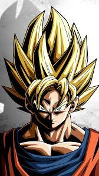

Goku
Goku es un saiyajin que llega a la Tierra y se dedica a defenderla de un montón
de personajes malignos. Goku cuenta con la capacidad al comienzo de la serie de
transformarse en un mono gigante, y ahí es donde aparece la principal inspiración
de Toriyama que repasan en este vídeo Pascu y Rodri.
Le llamemos Goku, Son Goku o Kakarotto, estamos hablando de uno de los personajes
más queridos del mundo del manga y anime, una cara reconocida incluso fuera de esos
círculos. Mucha gente habrá oído su nombre o sería capaz de reconocerlo si viera una
ilustración sin haber visto nunca un episodio de la serie y, tal es su popularidad,
que en Japón tiene un día de celebración a nivel nacional: el 9 de Mayo.
Nacido del lápiz de Akira Toriyama en el año 84, el manga de Dragon Ball fue publicado
en la revista ‘Shonen Jump’ durante once años. Más o menos en el mismo periodo se emitió
el anime, con más de 350 capítulos, y dicen que muchos de ellos fueron material “de relleno”:
la adaptación al anime iba más rápido que la publicación del manga, por lo que los capítulos
eran partes no presentes en el mismo para dar tiempo a Toriyama para avanzar en la historia.